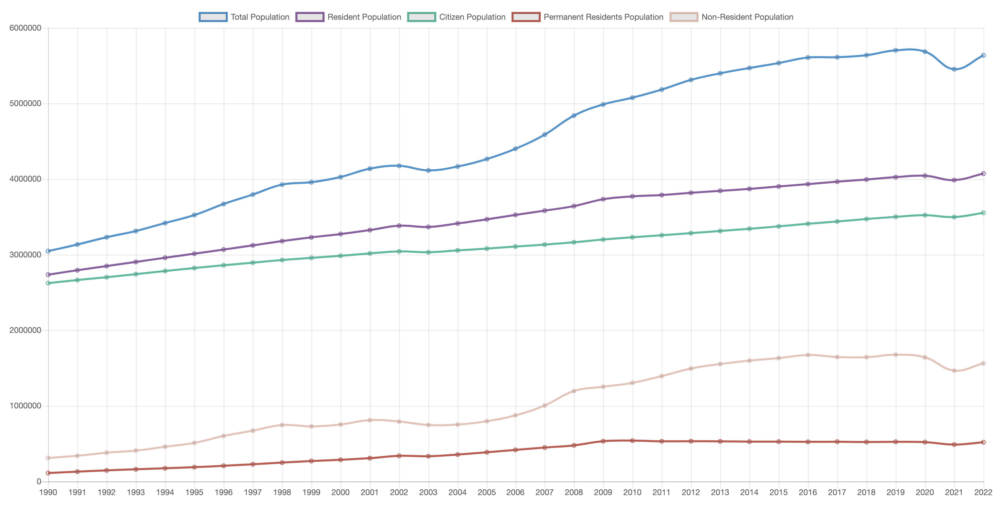

Take a look at the different population types in Singapore.
** I'm having a lot of trouble getting the chart up here but I can get it on a separate html and js file. While I figure that out, a screenshot from the other one will have to suffice.
** option to change graph into a pie chart to show proportion of residents and non-residents